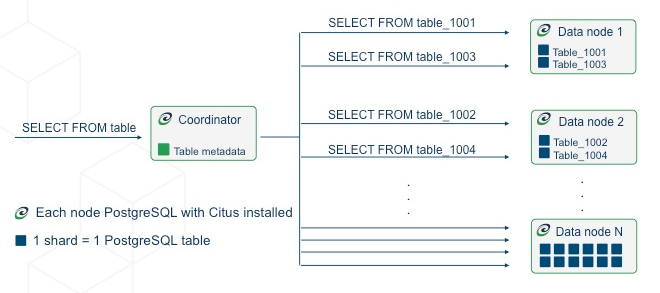

Concepts
Nodes
Canopy is a LightDB extension that allows commodity database servers (called nodes) to coordinate with one another in a “shared nothing” architecture. The nodes form a cluster that allows LightDB to hold more data and use more CPU cores than would be possible on a single computer. This architecture also allows the database to scale by simply adding more nodes to the cluster.
Coordinator and Workers
Every cluster has one special node called the coordinator (the others are known as workers). Applications send their queries to the coordinator node which relays it to the relevant workers and accumulates the results.
For each query, the coordinator either routes it to a single worker node, or parallelizes it across several depending on whether the required data lives on a single node or multiple. The coordinator knows how to do this by consulting its metadata tables. These Canopy-specific tables track the DNS names and health of worker nodes, and the distribution of data across nodes. For more information, see our Canopy Tables and Views.
Distributed Data
Table Types
There are three types of tables in a Canopy cluster, each used for different purposes.
Type 1: Distributed Tables
The first type, and most common, is distributed tables. These appear to be normal tables to SQL statements, but are horizontally partitioned across worker nodes.
Here the rows of table are stored in tables table_1001, table_1002 etc on the workers. The component worker tables are called shards.
Canopy runs not only SQL but DDL statements throughout a cluster, so changing the schema of a distributed table cascades to update all the table’s shards across workers.
To learn how to create a distributed table, see Creating and Modifying Distributed Tables (DDL).
Distribution Column
Canopy uses algorithmic sharding to assign rows to shards. This means the assignment is made deterministically – in our case based on the value of a particular table column called the distribution column. The cluster administrator must designate this column when distributing a table. Making the right choice is important for performance and functionality, as described in the general topic of Distributed Data Modeling.
Type 2: Reference Tables
A reference table is a type of distributed table whose entire contents are concentrated into a single shard which is replicated on every worker. Thus queries on any worker can access the reference information locally, without the network overhead of requesting rows from another node. Reference tables have no distribution column because there is no need to distinguish separate shards per row.
Reference tables are typically small, and are used to store data that is relevant to queries running on any worker node. For example, enumerated values like order statuses, or product categories.
When interacting with a reference table we automatically perform two-phase commits (2PC) on transactions. This means that Canopy makes sure your data is always in a consistent state, regardless of whether you are writing, modifying, or deleting it.
The Reference Tables section talks more about these tables and how to create them.
Type 3: Local Tables
When you use Canopy, the coordinator node you connect to and interact with is a regular LightDB database with the Canopy extension installed. Thus you can create ordinary tables and choose not to shard them. This is useful for small administrative tables that don’t participate in join queries. An example would be users table for application login and authentication.
Creating standard LightDB tables is easy because it’s the default. It’s what you get when you run CREATE TABLE. In almost every Canopy deployment we see standard LightDB tables co-existing with distributed and reference tables. Indeed, Canopy itself uses local tables to hold cluster metadata, as mentioned earlier.
Shards
The previous section described a shard as containing a subset of the rows of a distributed table in a smaller table within a worker node. This section gets more into the technical details.
The pg_dist_shard metadata table on the coordinator contains a row for each shard of each distributed table in the system. The row matches a shardid with a range of integers in a hash space (shardminvalue, shardmaxvalue):
SELECT * from pg_dist_shard;
logicalrelid | shardid | shardstorage | shardminvalue | shardmaxvalue
---------------+---------+--------------+---------------+---------------
github_events | 102026 | t | 268435456 | 402653183
github_events | 102027 | t | 402653184 | 536870911
github_events | 102028 | t | 536870912 | 671088639
github_events | 102029 | t | 671088640 | 805306367
(4 rows)
If the coordinator node wants to determine which shard holds a row of github_events, it hashes the value of the distribution column in the row, and checks which shard’s range contains the hashed value. (The ranges are defined so that the image of the hash function is their disjoint union.)
Shard Placements
Suppose that shard 102027 is associated with the row in question. This means the row should be read or written to a table called github_events_102027 in one of the workers. Which worker? That is determined entirely by the metadata tables, and the mapping of shard to worker is known as the shard placement.
Joining some metadata tables gives us the answer. These are the types of lookups that the coordinator does to route queries. It rewrites queries into fragments that refer to the specific tables like github_events_102027, and runs those fragments on the appropriate workers.
SELECT
shardid,
node.nodename,
node.nodeport
FROM pg_dist_placement placement
JOIN pg_dist_node node
ON placement.groupid = node.groupid
AND node.noderole = 'primary'::noderole
WHERE shardid = 102027;
┌─────────┬───────────┬──────────┐
│ shardid │ nodename │ nodeport │
├─────────┼───────────┼──────────┤
│ 102027 │ localhost │ 5433 │
└─────────┴───────────┴──────────┘
In our example of github_events there were four shards. The number of shards is configurable per table at the time of its distribution across the cluster. The best choice of shard count depends on your use case, see Shard Count.
Finally note that Canopy allows shards to be replicated for protection against data loss. There are two replication “modes:” Canopy replication and streaming replication. The former creates extra backup shard placements and runs queries against all of them that update any of them. The latter is more efficient and utilizes LightDB’s streaming replication to back up the entire database of each node to a follower database. This is transparent and does not require the involvement of Canopy metadata tables.
Co-Location
Since shards and their replicas can be placed on nodes as desired, it makes sense to place shards containing related rows of related tables together on the same nodes. That way join queries between them can avoid sending as much information over the network, and can be performed inside a single Canopy node.
One example is a database with stores, products, and purchases. If all three tables contain – and are distributed by – a store_id column, then all queries restricted to a single store can run efficiently on a single worker node. This is true even when the queries involve any combination of these tables.
For a full explanation and examples of this concept, see Table Co-Location.
Parallelism
Spreading queries across multiple machines allows more queries to run at once, and allows processing speed to scale by adding new machines to the cluster. Additionally splitting a single query into fragments as described in the previous section boosts the processing power devoted to it. The latter situation achieves the greatest parallelism, meaning utilization of CPU cores.
Queries reading or affecting shards spread evenly across many nodes are able to run at “real-time” speed. Note that the results of the query still need to pass back through the coordinator node, so the speedup is most apparent when the final results are compact, such as aggregate functions like counting and descriptive statistics.
Query Processing explains more about how queries are broken into fragments and how their execution is managed.
Query Execution
When executing multi-shard queries, Canopy must balance the gains from parallelism with the overhead from database connections (network latency and worker node resource usage). To configure Canopy’ query execution for best results with your database workload, it helps to understand how Canopy manages and conserves database connections between the coordinator node and worker nodes.
Canopy transforms each incoming multi-shard query session into per-shard queries
called tasks. It queues the tasks, and runs them once it’s able to obtain
connections to the relevant worker nodes. For queries on distributed tables
foo and bar, here’s a diagram of the connection management:
The coordinator node has a connection pool for each session. Each query (such
as SELECT * FROM foo in the diagram) is limited to opening at most
canopy.max_adaptive_executor_pool_size (integer) simultaneous connections for its tasks
per worker. That setting is configurable at the session level, for priority
management.
It can be faster to execute short tasks sequentially over the same connection rather than establishing new connections for them in parallel. Long running tasks, on the other hand, benefit from more immediate parallelism.
To balance the needs of short and long tasks, Canopy uses canopy.executor_slow_start_interval (integer). That setting specifies a delay between connection attempts for the tasks in a multi-shard query. When a query first queues tasks, the tasks can acquire just one connection. At the end of each interval where there are pending connections, Canopy increases the number of simultaneous connections it will open. The slow start behavior can be disabled entirely by setting the GUC to 0.
When a task finishes using a connection, the session pool will hold the connection open for later. Caching the connection avoids the overhead of connection reestablishment between coordinator and worker. However, each pool will hold no more than canopy.max_cached_conns_per_worker (integer) idle connections open at once, to limit idle connection resource usage in the worker.
Finally, the setting canopy.max_shared_pool_size (integer) acts as a fail-safe. It limits the total connections per worker between all tasks.
For recommendations about tuning these parameters to match your workload, see Connection Management.